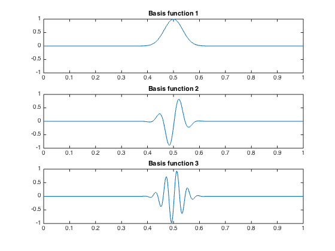
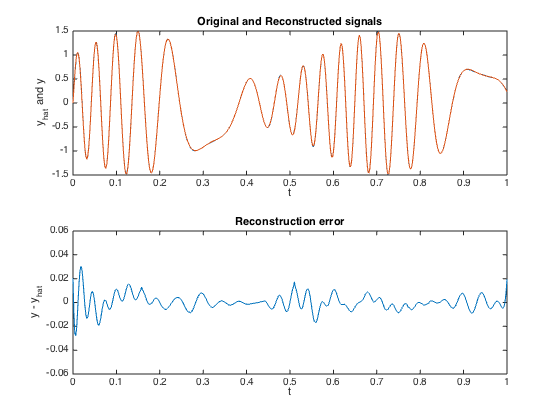
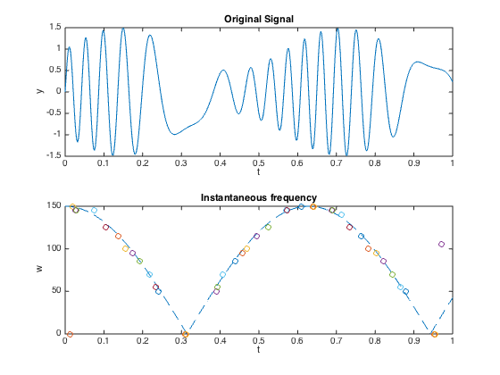

% Section 6.5.4 % Boyd & Vandenberghe "Convex Optimization" % Original by Lieven Vandenberghe % Adapted for CVX by Argyris Zymnis - 11/27/2005 % % Here we find a sparse basis for a signal y out of % a set of Gabor functions. We do this by solving % minimize ||A*x-y||_2 + ||x||_1 % % where the columns of A are sampled Gabor functions. % We then fix the sparsity pattern obtained and solve % minimize ||A*x-y||_2 % % NOTE: The file takes a while to run clear % Problem parameters sigma = 0.05; % Size of Gaussian function Tinv = 500; % Inverse of sample time Thr = 0.001; % Basis signal threshold kmax = 30; % Number of signals are 2*kmax+1 w0 = 5; % Base frequency (w0 * kmax should be 150 for good results) % Build sine/cosine basis fprintf(1,'Building dictionary matrix...'); % Gaussian kernels TK = (Tinv+1)*(2*kmax+1); t = (0:Tinv)'/Tinv; A = exp(-t.^2/(sigma^2)); ns = nnz(A>=Thr)-1; A = A([ns+1:-1:1,2:ns+1],:); ii = (0:2*ns)'; jj = ones(2*ns+1,1)*(1:Tinv+1); oT = ones(1,Tinv+1); A = sparse(ii(:,oT)+jj,jj,A(:,oT)); A = A(ns+1:ns+Tinv+1,:); % Sine/Cosine basis k = [ 0, reshape( [ 1 : kmax ; 1 : kmax ], 1, 2 * kmax ) ]; p = zeros(1,2*kmax+1); p(3:2:end) = -pi/2; SC = cos(w0*t*k+ones(Tinv+1,1)*p); % Multiply ii = 1:numel(SC); jj = rem(ii-1,Tinv+1)+1; A = sparse(ii,jj,SC(:)) * A; A = reshape(A,Tinv+1,(Tinv+1)*(2*kmax+1)); fprintf(1,'done.\n'); % Construct example signal a = 0.5*sin(t*11)+1; theta = sin(5*t)*30; b = a.*sin(theta); % Solve the Basis Pursuit problem disp('Solving Basis Pursuit problem...'); tic cvx_begin variable x(30561) minimize(sum_square(A*x-b)+norm(x,1)) cvx_end disp('done'); toc % Reoptimize problem over nonzero coefficients p = find(abs(x) > 1e-5); A2 = A(:,p); x2 = A2 \ b; % Constants M = 61; % Number of different Basis signals sk = 250; % Index of s = 0.5 % Plot example basis functions; %if (0) % to do this, re-run basispursuit.m to create A figure(1); clf; subplot(3,1,1); plot(t,A(:,M*sk+1)); axis([0 1 -1 1]); title('Basis function 1'); subplot(3,1,2); plot(t,A(:,M*sk+31)); axis([0 1 -1 1]); title('Basis function 2'); subplot(3,1,3); plot(t,A(:,M*sk+61)); axis([0 1 -1 1]); title('Basis function 3'); %print -deps bp-dict_helv.eps % Plot reconstructed signal figure(2); clf; subplot(2,1,1); plot(t,A2*x2,'--',t,b,'-'); axis([0 1 -1.5 1.5]); xlabel('t'); ylabel('y_{hat} and y'); title('Original and Reconstructed signals') subplot(2,1,2); plot(t,A2*x2-b); axis([0 1 -0.06 0.06]); title('Reconstruction error') xlabel('t'); ylabel('y - y_{hat}'); %print -deps bp-approx_helv.eps % Plot frequency plot figure(3); clf; subplot(2,1,1); plot(t,b); xlabel('t'); ylabel('y'); axis([0 1 -1.5 1.5]); title('Original Signal') subplot(2,1,2); plot(t,150*abs(cos(w0*t)),'--'); hold on; for k = 1:length(t); if(abs(x((k-1)*M+1)) > 1e-5), plot(t(k),0,'o'); end; for j = 2:2:kmax*2 if((abs(x((k-1)*M+j)) > 1e-5) | (abs(x((k-1)*M+j+1)) > 1e-5)), plot(t(k),w0*j/2,'o'); end; end; end; xlabel('t'); ylabel('w'); title('Instantaneous frequency') hold off;
Building dictionary matrix...done.
Solving Basis Pursuit problem...
Calling SDPT3 4.0: 61625 variables, 502 equality constraints
------------------------------------------------------------
num. of constraints = 502
dim. of socp var = 61625, num. of socp blk = 30562
*******************************************************************
SDPT3: Infeasible path-following algorithms
*******************************************************************
version predcorr gam expon scale_data
NT 1 0.000 1 0
it pstep dstep pinfeas dinfeas gap prim-obj dual-obj cputime
-------------------------------------------------------------------
0|0.000|0.000|1.5e+00|1.7e+02|7.6e+06| 4.324221e+04 0.000000e+00| 0:0:02| chol 1 1
1|1.000|0.995|3.6e-07|1.0e+00|8.6e+04| 4.270270e+04 -7.964108e+01| 0:0:04| chol 1 1
2|1.000|0.989|4.6e-07|2.1e-02|1.1e+04| 1.102337e+04 -7.582646e-01| 0:0:07| chol 1 1
3|0.970|0.989|2.1e-08|1.2e-03|3.4e+02| 3.397756e+02 3.356358e-01| 0:0:10| chol 1 1
4|0.484|0.886|1.2e-08|2.3e-04|2.1e+02| 2.206064e+02 6.421842e+00| 0:0:13| chol 1 1
5|0.772|0.915|2.8e-09|2.8e-05|1.0e+02| 1.106558e+02 1.003458e+01| 0:0:15| chol 1 1
6|0.507|0.828|1.4e-09|5.7e-06|6.6e+01| 7.735771e+01 1.171877e+01| 0:0:18| chol 1 1
7|0.514|0.678|6.7e-10|1.9e-06|4.0e+01| 5.172854e+01 1.210713e+01| 0:0:21| chol 1 1
8|0.362|0.850|4.3e-10|3.0e-07|3.0e+01| 4.235935e+01 1.241274e+01| 0:0:24| chol 1 1
9|0.447|0.604|2.4e-10|1.2e-07|2.0e+01| 3.222978e+01 1.253063e+01| 0:0:27| chol 1 1
10|0.527|0.932|1.1e-10|8.1e-09|1.2e+01| 2.482939e+01 1.268651e+01| 0:0:30| chol 1 1
11|0.624|0.687|4.2e-11|2.6e-09|6.6e+00| 1.932119e+01 1.274802e+01| 0:0:33| chol 1 1
12|0.599|0.980|1.7e-11|6.1e-11|3.7e+00| 1.649674e+01 1.281034e+01| 0:0:36| chol 1 1
13|0.543|0.647|7.7e-12|2.5e-11|2.2e+00| 1.507030e+01 1.282581e+01| 0:0:39| chol 1 1
14|0.541|0.964|3.5e-12|2.5e-12|1.3e+00| 1.413866e+01 1.283901e+01| 0:0:42| chol 1 1
15|0.728|0.656|9.8e-13|1.8e-12|5.3e-01| 1.337669e+01 1.284169e+01| 0:0:45| chol 1 1
16|0.458|0.608|7.3e-13|1.7e-12|3.4e-01| 1.318123e+01 1.284339e+01| 0:0:48| chol 1 1
17|0.590|0.955|5.4e-13|1.1e-12|1.9e-01| 1.303175e+01 1.284468e+01| 0:0:51| chol 1 1
18|0.961|0.987|1.8e-12|1.0e-12|4.6e-02| 1.289055e+01 1.284500e+01| 0:0:54| chol 1 1
19|0.761|0.883|4.3e-12|1.1e-12|1.6e-02| 1.286137e+01 1.284512e+01| 0:0:57| chol 1 1
20|0.882|0.884|1.8e-11|1.1e-12|2.8e-03| 1.284795e+01 1.284515e+01| 0:0:59| chol 1 1
21|0.943|0.968|5.3e-11|1.5e-12|2.8e-04| 1.284543e+01 1.284516e+01| 0:1:02| chol 2 2
22|0.628|0.970|3.9e-11|2.3e-12|1.5e-04| 1.284530e+01 1.284516e+01| 0:1:05| chol 2 2
23|0.631|1.000|2.2e-11|3.4e-12|7.8e-05| 1.284523e+01 1.284516e+01| 0:1:08| chol 1 2
24|0.623|1.000|1.1e-11|4.3e-12|4.2e-05| 1.284520e+01 1.284516e+01| 0:1:11| chol 2 2
25|0.619|1.000|6.8e-12|2.3e-12|2.3e-05| 1.284518e+01 1.284516e+01| 0:1:14| chol 1 2
26|0.602|1.000|5.0e-12|1.4e-12|1.3e-05| 1.284517e+01 1.284516e+01| 0:1:16| chol 2 2
27|0.591|1.000|3.6e-12|1.0e-12|7.0e-06| 1.284516e+01 1.284516e+01| 0:1:19| chol 2 2
28|0.599|1.000|2.8e-12|1.0e-12|3.9e-06| 1.284516e+01 1.284516e+01| 0:1:22| chol 2 2
29|0.606|1.000|2.1e-12|1.0e-12|2.2e-06| 1.284516e+01 1.284516e+01| 0:1:25| chol 2 2
30|0.612|1.000|1.8e-12|1.0e-12|1.2e-06| 1.284516e+01 1.284516e+01| 0:1:28| chol 2 2
31|0.618|1.000|1.9e-12|1.0e-12|6.4e-07| 1.284516e+01 1.284516e+01| 0:1:31| chol 2 2
32|0.622|1.000|2.0e-12|1.0e-12|3.4e-07| 1.284516e+01 1.284516e+01| 0:1:34|
stop: max(relative gap, infeasibilities) < 1.49e-08
-------------------------------------------------------------------
number of iterations = 32
primal objective value = 1.28451560e+01
dual objective value = 1.28451557e+01
gap := trace(XZ) = 3.44e-07
relative gap = 1.29e-08
actual relative gap = 1.29e-08
rel. primal infeas (scaled problem) = 1.97e-12
rel. dual " " " = 1.00e-12
rel. primal infeas (unscaled problem) = 0.00e+00
rel. dual " " " = 0.00e+00
norm(X), norm(y), norm(Z) = 3.5e+00, 9.9e-01, 1.9e+02
norm(A), norm(b), norm(C) = 6.9e+02, 1.9e+01, 1.8e+02
Total CPU time (secs) = 93.60
CPU time per iteration = 2.92
termination code = 0
DIMACS: 1.5e-11 0.0e+00 8.8e-11 0.0e+00 1.3e-08 1.3e-08
-------------------------------------------------------------------
------------------------------------------------------------
Status: Solved
Optimal value (cvx_optval): +12.8452
done
Elapsed time is 109.096507 seconds.
  